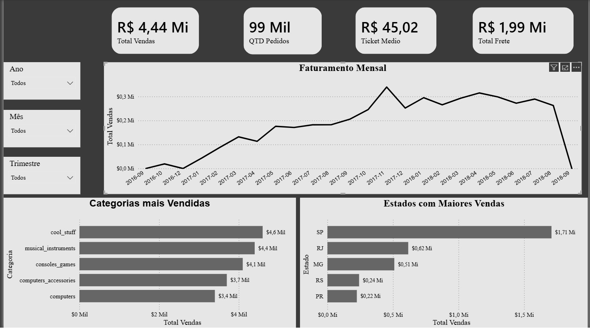
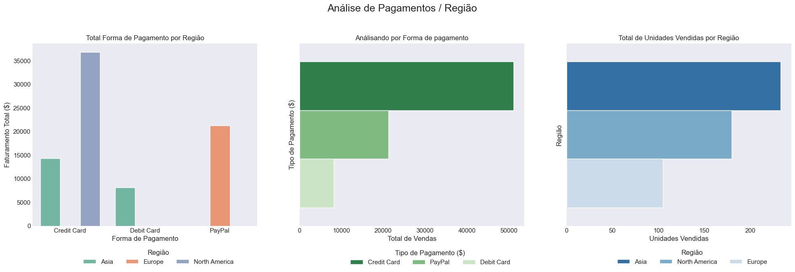
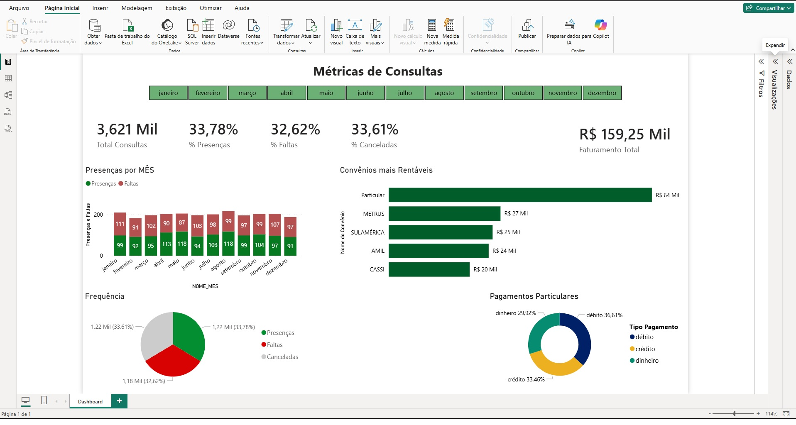
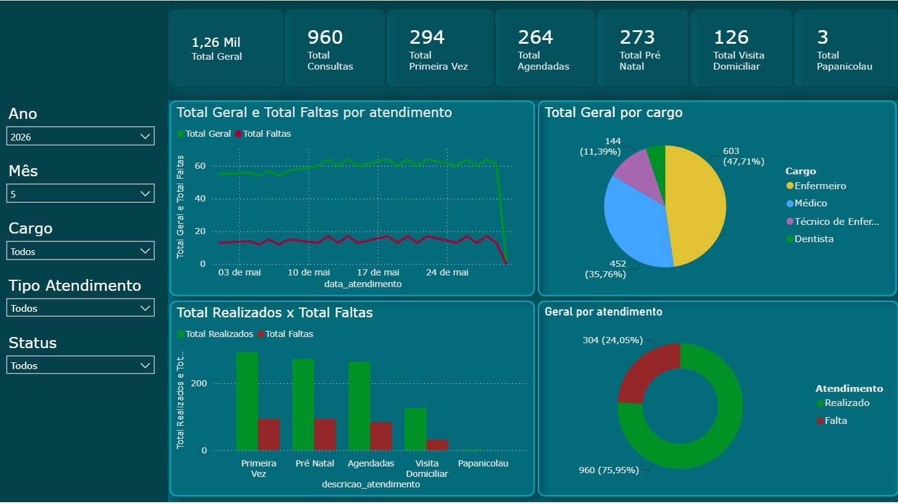

Analista de Dados | ADS
Graduando em Análise e Desenvolvimento de Sistemas (ADS), com bagagem em processos administrativos, operacionais e faturamento. Aplico esse conhecimento de negócio na transformação de dados brutos em decisões estratégicas.
Atualmente, focado no ecossistema completo de dados: construção de dashboards interativos no Power BI, consultas e modelagem com SQL, e desenvolvimento de scripts em Python (Pandas, Seaborn e Matplotlib) para Análise Exploratória e automação de processos.
Busco oportunidades para gerar insights de alto valor e otimizar rotinas operacionais através da inteligência de dados.
Habilidades Técnicas
Power BI
DAX, visualizações interativas, modelagem de dados, integração de fontes e Storytelling com dados.
SQL
Consultas complexas, Joins, Agregações, View e Modelagem de Dados (Normalização).
Python para Dados
Análise Exploratória (Pandas), Visualização (Seaborn/Matplotlib) e automação de scripts.
Excel Avançado
Tabelas Dinâmicas, Fórmulas de Análise, Power Query e Automação de Relatórios.
Projetos & Soluções em Dados

Power BI
Dashboard de People Analytics: Análise estratégica de recursos humanos. A partir da base bruta (HRDataset), foram desenvolvidos modelos de dados no Excel e Power BI com medidas em DAX para diagnosticar a rotatividade, equidade salarial, eficácia dos canais de atração e impacto do presenteísmo no desempenho.
Repositório GitHub
Power BI & SQL
Dashboard E-commerce D2C: Análise de faturamento, ticket médio, KPIs executivos e modelagem em SQL.
Repositório GitHub
Python (Data Science)
Análise de Vendas Online: Estudo exploratório e identificação de padrões de consumo usando Pandas e Seaborn.
Repositório GitHub
Power BI
Dashboard OrtoData: Métricas de consultas, acompanhamento de atendimentos e taxa de retorno de pacientes.
LinkedIn
Power BI
Dashboard de Controle da Produção Diária: Monitoramento de métricas operacionais, volume produzido e acompanhamento de metas diárias.
Repositório GitHub